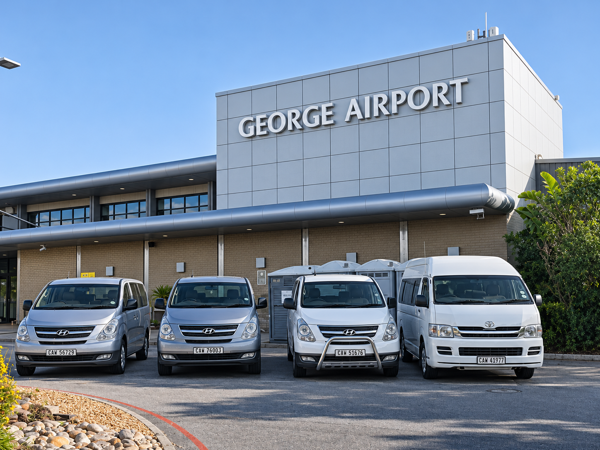
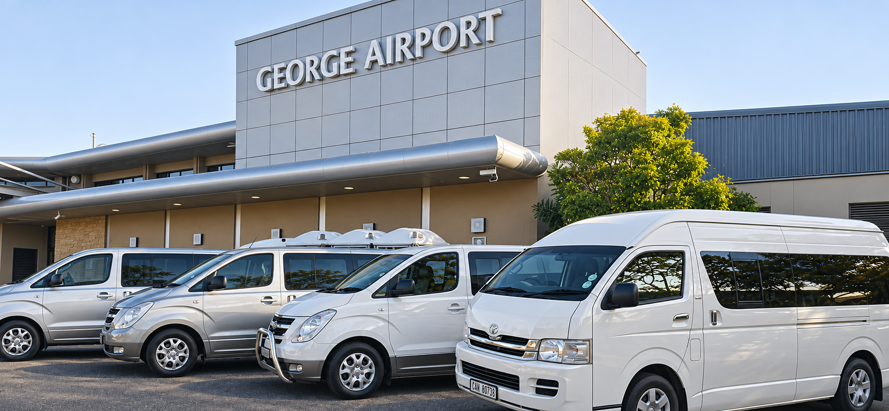
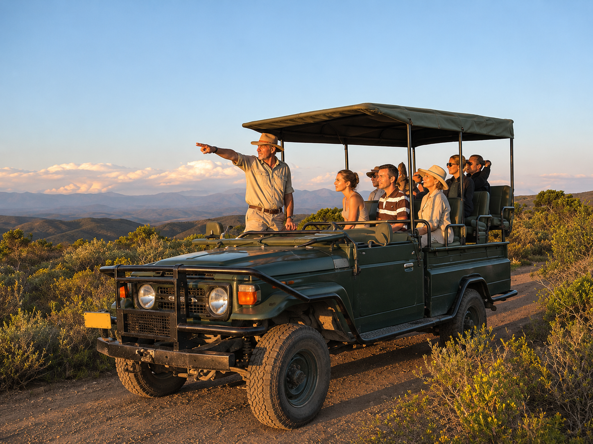
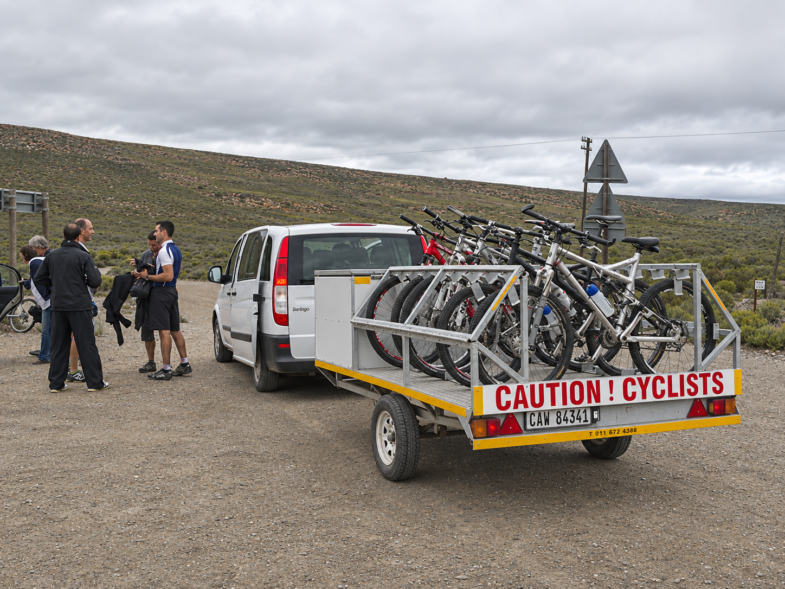

01Airport shuttles
Airport shuttles
& transfers
Reliable transfers to and from George Airport for individuals, families and groups travelling throughout the Garden Route.
Arrange a pickup →George • Garden Route • South Africa
Airport transfers, private shuttles and unforgettable day trips — delivered with the local knowledge that comes from more than 30 years on the road.
Move your way
Whether it’s a quiet airport pickup, a group adventure or specialist transport for your gear, our experienced team gets you there safely, comfortably and on time.

Reliable transfers to and from George Airport for individuals, families and groups travelling throughout the Garden Route.
Arrange a pickup →Discreet, quality transport in unmarked vehicles for groups of 4 to 10 people across the Garden Route.
Request VIP transport →Your chauffeur-driven way to explore the beauty and wonders of the Garden Route and Klein Karoo.
See day trips →Transport for events, festivals, luggage, cycles, sporting gear and groups of up to 22 passengers.
Plan group transport →The right ride
Our fleet ranges from comfortable taxis for 1–4 passengers to Hyundai H1 shuttles for 7 and Quantum buses seating 13–22 people. Your luggage, cycles and golf equipment can travel too.

Go further
From George to Knysna, Plettenberg Bay, Oudtshoorn and beyond — no destination is too near or too far.

01 / DAY TRIPS
02 / SPECIALISTA George original
Zeelie Taxis is one of the oldest taxi services in George. For more than 30 years, we have moved travellers of every group size to destinations across the Garden Route — and anywhere in South Africa.
Our vehicles comply with South African roadworthy standards and carry sufficient liability insurance, so every journey is handled with safety, style and comfort.
In their words
“Excellent service from start to finish. Our driver Faizel was brilliant, friendly and courteous — he was on time for both pick up and drop off, and the vehicle was in superb condition.”
Lindsey RaynerGarden Route traveller
“We have made use of their service between the airport and Glentana for a number of years. They are a friendly lot and we have never had any dissatisfaction with their service.”
Paul LouwReturning passenger
Ready when you are
Share your travel details and the Zeelie team will help arrange the right vehicle for your journey.